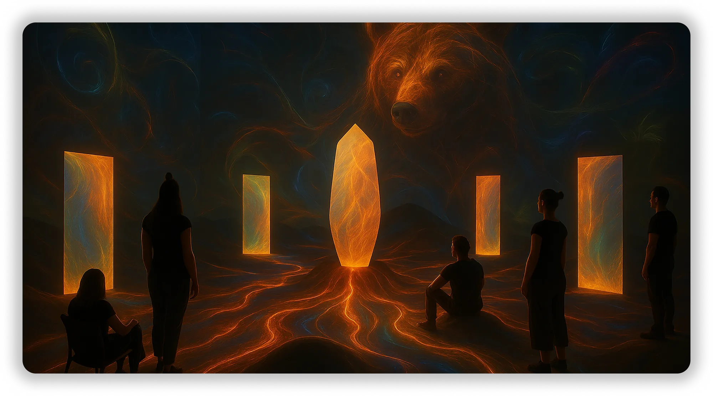
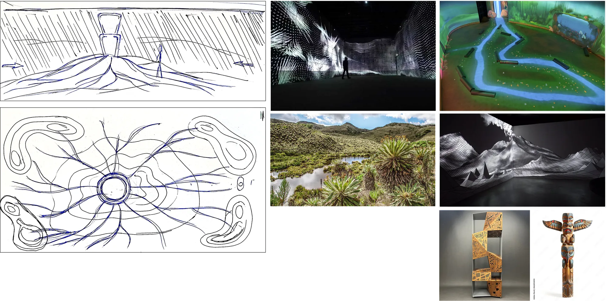
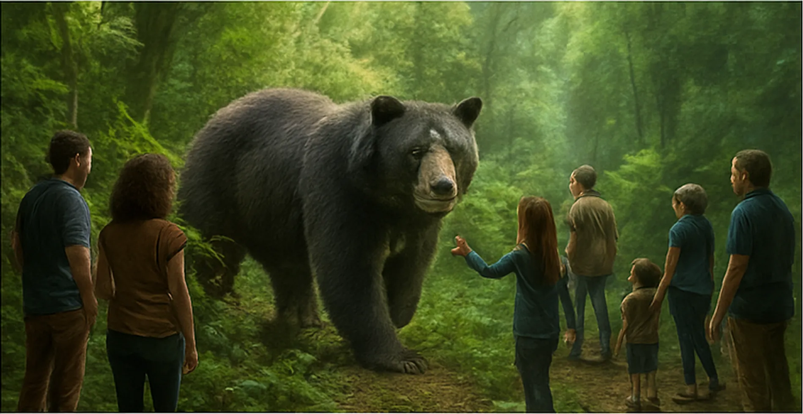
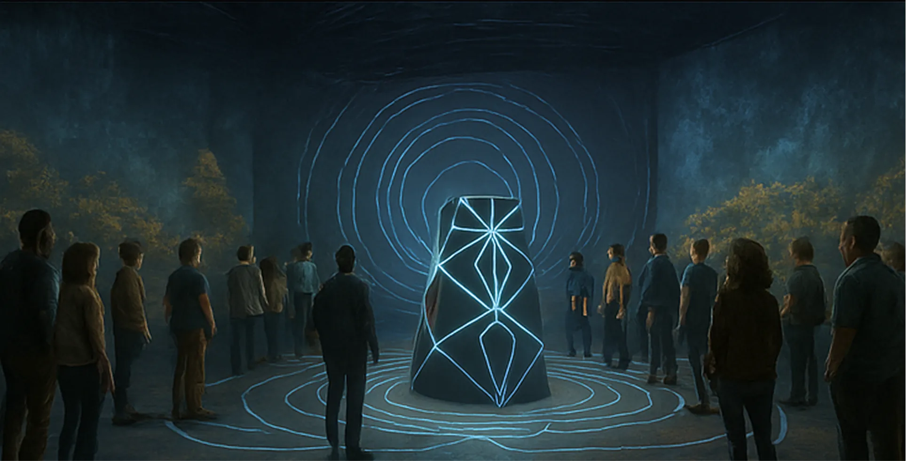
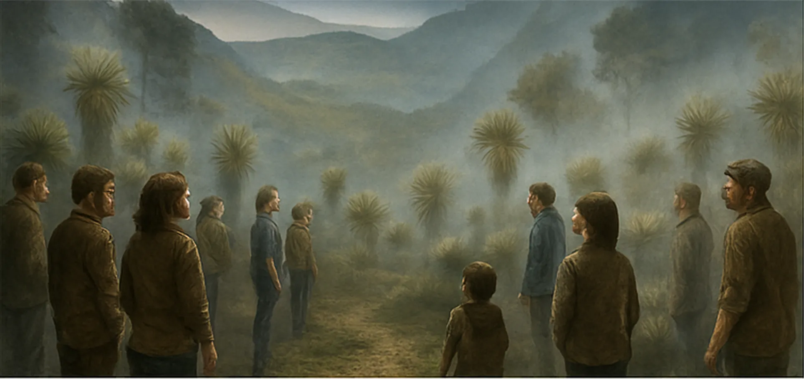
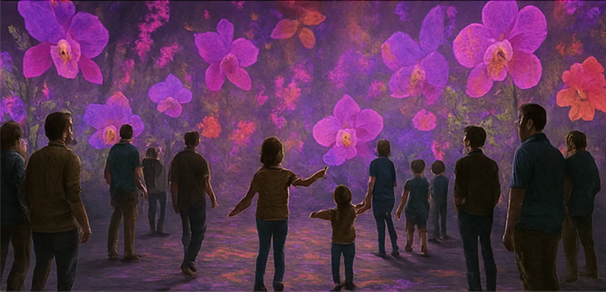
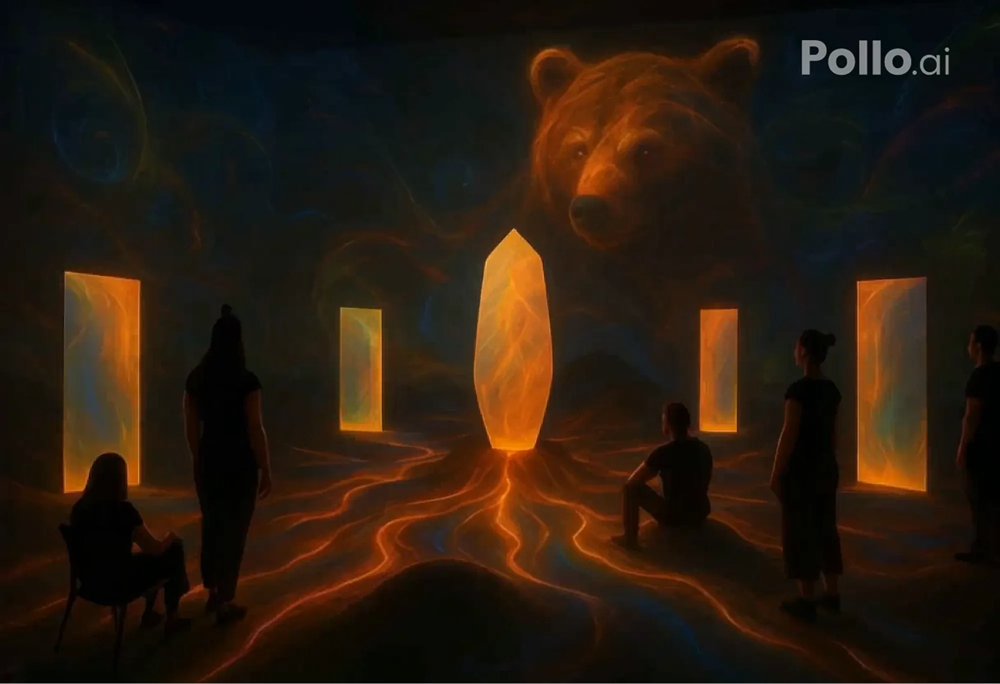

Projet expérimental
ParamoTotem
Experience Designer
Projet expérimental conçu pour créer une expérience immersive et interactive inspirée des écosystèmes naturels du páramo colombien, à travers des stations thématiques dédiées à chaque espèce emblématique.
- Type · Projet expérimental
- Rôle · Experience Designer
- Inspiration · Páramo colombien

Concept
Le páramo est l'un des écosystèmes les plus précieux et les plus menacés de la planète. ParamoTotem est une installation interactive qui plonge les visiteurs dans cet environnement unique à travers des stations dédiées à chaque espèce emblématique : l'ours à lunettes, le condor des Andes, le frailejón et l'orchidée.
Chaque station est conçue comme un espace sensoriel autonome, combinant visuels génératifs, sons ambiants et interactions physiques pour créer un lien émotionnel fort avec la biodiversité du páramo.

Stations thématiques
Les quatre stations composent un parcours narratif et sensoriel. Chacune explore une espèce du páramo à travers des interactions spécifiques et une identité visuelle propre, tout en maintenant une cohérence globale dans l'expérience.
- Ours à lunettes
- Condor des Andes
- Frailejón
- Orchidée




Expérience visuelle
Les visuels génératifs sont au cœur de l'expérience ParamoTotem. Les lumières, les textures et les animations répondent aux interactions des visiteurs, créant une ambiance vivante et évolutive qui traduit la dynamique des écosystèmes naturels.
